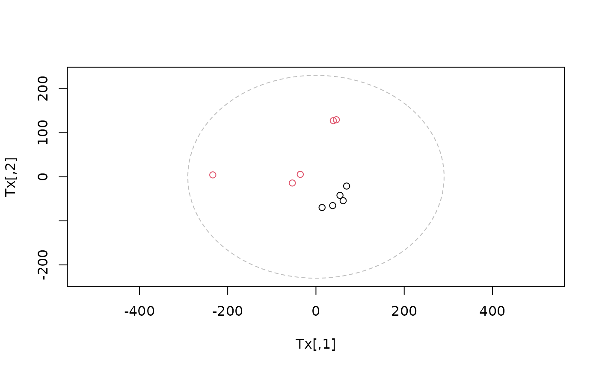

Fits an unsupervised Principal Component Analysis (PCA) model
to a spectral data matrix. Model-internal centering and scaling
are controlled via a ScalingStrategy object and do not
modify the input matrix.
The default backend uses an internal NIPALS implementation.
Alternatively, PCA algorithms from the pcaMethods package
(e.g. "ppca", "svd", "robustPca") can be used.
Arguments
- X
Numeric matrix (rows = samples, columns = variables).
- scaling
A
ScalingStrategyobject defining model-internal centering and scaling (e.g.uv_scaling(center = TRUE)).- ncomp
Integer. Number of principal components to compute.
- method
Character. PCA backend. Use
"nipals"for the internal implementation or any method supported bypcaMethods::pca().
Value
An object of class m8_model with engine = "pca".
The object contains:
fit$t: Score matrix (samples × components)fit$p: Loading matrix (components × variables)ctrl: Model control information (variance explained, scaling settings)provenance: Attributes inherited from the input matrix
Details
PCA decomposes \(X\) into orthogonal score and loading matrices: $$X \approx T P$$ where:
\(T\) contains the principal component scores
\(P\) contains the loadings
The number of components is fixed by ncomp.
Unlike supervised models, PCA does not use cross-validation
or stopping rules.
Scaling and centering are applied internally during model fitting. The original input matrix is not modified.
Examples
data(covid)
uv <- uv_scaling(center=TRUE)
model <- pca(X=covid$X, scaling=uv, ncomp=2)
show(model)
#>
#> m8_model <pca>
#> ----------------------------------------
#> Dimensions : 10 samples x 27819 variables
#> Mode : unsupervised
#> Preprocess : center | UV
#> Components : 2
#> ----------------------------------------
#> Use summary() for performance metrics.
#>
summary(model)
#> $perf
#> comp R2X R2X_cum selected fit
#> 1 1 0.3023058 0.3023058 TRUE fitted
#> 2 2 0.1898503 0.4921561 TRUE fitted
#>
#> $engine
#> [1] "pca (nipals)"
#>
#> $y_type
#> [1] "unsupervised"
#>
Tx <- scores(model)
Px <- loadings(model)
t2 <- hotellingsT2(Tx)
ell <-ellipse2d(t2)
# scores plot
plot(Tx, asp = 1,
col = as.factor(covid$an$type),
xlim = range(c(Tx[1,], ell$x)),
ylim = range(c(Tx[2,], ell$y))
)
lines(ell$x, ell$y, col = "grey", lty=2)
